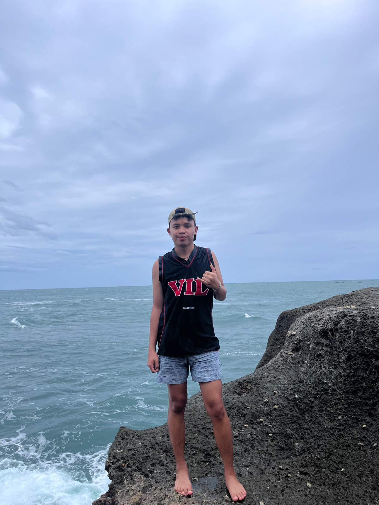

Biodata Diri
Website ini berisikan: Informasi pribadi saya, profil akademik, hobi, dan hal yang akan saya lakukan beberapa tahun ke depan.

Evan Natanael Perangin angin
- NIM: 2582011
- Program Studi: Teknik Informatika
- Jurusan : Sistem Informasi
- Status: Mahasiswa Aktif
Biografi Singkat Saya
Saya adalah mahasiswa Sistem Informasi yang suka pemrograman dan keindahan alam. Bagi saya, alam adalah salah satu cara saya untuk mencari inspirasi dan menghilangkan stres dalam pikiran. Saya pengen mempelajari teknologi untuk bisa membantu saya mencari tau apakah manusia dan robot bisa hidup bersama, atau akan membawa kehancuran bagi makhluk hidup, dan saya akan menciptakan solusi yang bermanfaat. Saya berharap bisa terus mengembangkan kemampuan di bidang Sistem Informasi sambil tetap menikmati keindahan alam dan belajar banyak dari pengalaman hidup orang lain atau dari saya sendiri.
Hobi dan Minat
Minat Tambahan
- Web Development : Pengen belajar bahasa HTML, JavaScript, atau berbagai conflict dalam github.
- Fotografi : Saya suka mengambil foto alam saat bepergian ke luar kota, jadi saya sering kali membawa kamera.
- Membaca Buku Teknologi : Karena di era sekarang saya melihat banyakorang mengurangi waktunya untuk membaca buku, maka disini lah kesempatan saya untuk mencari buku yang murah, akibat penurunan minat membaca anak muda sekarang.
- Menjadi lelaki sejati : lelaki sejati tidak akan mengkhinati ceweknya dan itu adalah hal yang belum tentu semua lelaki bisa lakukan.
Hobi Saya
- Main Voly
- Mendengarkan musik Jazz sambil kerjain tugas
- Lari di sore hari
- Nonton orang mukbang
- Main Game PUBG
Informasi Akademik
Rekapitulasi nilai dan IPK per semester yang telah ditempuh:
| SKS | Semester | Tahun Akademik | IPK (Grade Point Average) |
|---|---|---|---|
| 20 | Ganjil | 2025/2026 | 2.98 |
| 22 | Genap | 2025/2026 | 3.22 |